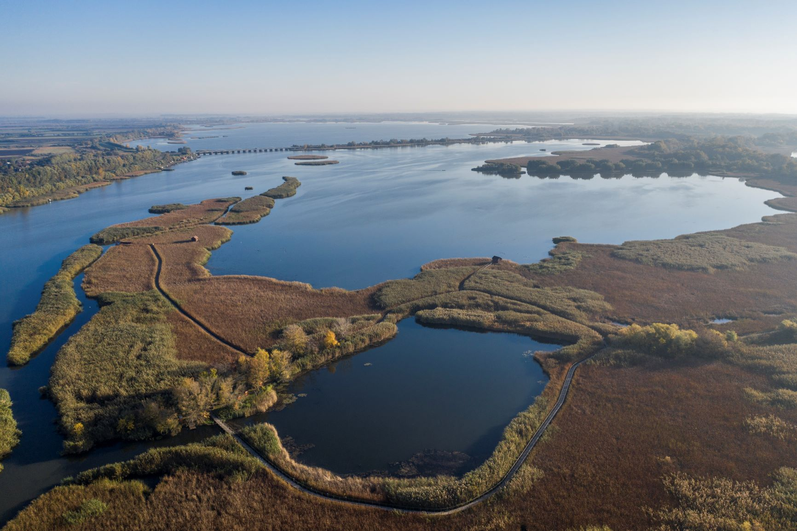
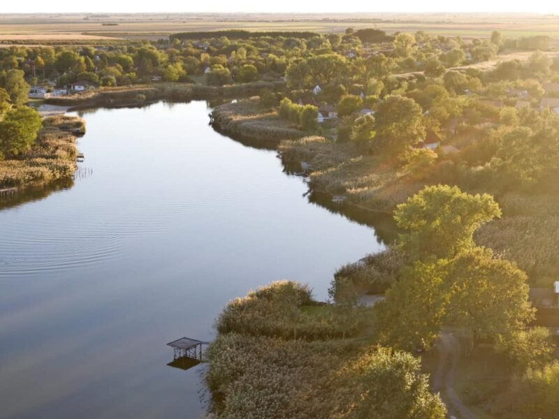

Balaton
A balatoni strandminősítő megmérettetésre az idén 45 strand üzemeltetője jelentkezett, és 28 strand
nyerte el a legjobbaknak
járó, ötcsillagos Kék Hullám Zászlót. A pontozás során vizsgálták egyebek közt a parkolási viszonyokat, a vizesblokkok állapotát, az
akadálymentesítést, a virágosítást, a gyep és a meder állapotát, a játszótereket, a sportolási
lehetőségeket és a gyerekbarát szolgáltatásokat.
Az idén újra meghirdették a Balaton Családbarát Strandja és a Balaton Legzöldebb Strandja
különdíjakat. Az előbbit Alsóörs községi strandja, az utóbbit a gyenesdiási Diási Játék Strand
nyerte el. Idén új elismeréseket is kiosztottak. A Balatoni Kör meghirdette a Balaton
Gasztro-Strandja díjat, amit Balatongyörök községi strandja nyert el, ahol példamutatóan, egész
évben üzemelnek minőségi kínálattal rendelkező vendéglátóhelyek.
Tisza-tó

A Tisza-tavi strandok egyik legnépszerűbbje Tiszafüreden van, ami egyébként az egyik legrégebbi:
1902 óta fürdőhely. A homokos plázs mindenkit vonz, ahogy a vizi játszótér, gasztrosarok, játszótér
is. A tiszafüredi strand a sportolási és kikapcsolódási lehetőségeknek köszönhetően több napon át
kínál programokat. A moduláris stégrendszeren napozhatunk, de ha már kipihentük magunkat, akkor
különféle sportolásra is van lehetőség, mint röplabda, foci, vízibicikli, kajak, kenu, SUP, van
fitneszpark és multisportpálya. A bejáratánál található a Tourintorm iroda, ahol parkoló és
kerekpáros szervizoszlop is található.
Ha csúszdázni szeretnél, akkor mindenképp Abádszalókra vedd az irányt! Három darab óriáscsúszda
várja a bátrabbakat, de aki vissza akar venni a tempóból, annak mini-golf pálya is elérhető, több
nehézségi szinttel. Homokfocizni is lehet, és strandröplabdázni is van lehetőség a strandon. Ha
megszomjazunk, akkor pedig a koktélbár segíthet a felfrissülésben. Vizuális csemegének számít a
strand LED Zoo-ja amely a Tisza-tó állatait formázza meg.
A 22 éves, ámde modern, igényes strand szintén számos kikapcsolódási lehetőséggel várja a fürdőzni
vágyókat. A Tisza-tavi strandok egyik leginkább családbarát helye ez, aminek a homokos partja a
gátkorona tövében található, a partja lassan mélyül, így nem kell attól tartani, hogy néhány lépés
után állig elmerülünk. A tavalyi évhez képest újítás egy új stégrendszer, ahol napozó sziget várja a
pihenni vágyókat.
Szelidi-tó

A Szelidi tó különleges vízösszetétele és élővilága miatt már korán felfigyeltek rá a kutatók is.
Először Dr. Tímár Kálmán foglalkozott a tó eredetével és történetével, majd tudományos szempontból
Dr. Donászy Ernő vizsgálta meg. Ő foglalta össze a tó mikroszkopikus élővilágát több mint 400
oldalas német nyelvű könyvében, 1959-ben. Az erősen sós, illetve sajátos sóösszetételű vízben egyedi
mikroszkopikus növény- és állatvilág alakult ki. A tó vize jellemzően magas jódtartalmú víz, ez adja
gyógyhatását, mert felszívódik a bőrön keresztül. Az ide látogatók első észrevétele, hogy ez a
szikes víz bársonyos tapintású. Ezt a tulajdonságát mind a mai napig megőrizte a tó.
Annak ellenére, hogy a természetes és mesterséges folyamatok hatására lassú átalakulásban van a tó
vize, még mindig tapasztalható a gyógyhatás. A Szelidi- tó és szűkebb környezete 1976 óta mint
természetvédelmi terület védelem alatt áll, a Kiskunsági Nemzeti Park része. A Szelidi-tó
Természetvédelmi Terület kiterjedése 320 hektár.
Az öt kilométer hosszú Szelidi-tó déli partján ingyenes és fizetős strand is van, ahol homokos
stranddal, kempingekkel, játszóterekkel, vízi csúszdákkal várják a látogatókat, a fizetős részen
vízibiciklit, csónakot, kenut is lehet bérelni.
A Szelidi-tó a jégkorszak után a Duna mellékágából lefűződött morotvató. Ez az egyetlen mély vizű,
szikes jellegű tó hazánkban. Vize nátrium- kálium- és magnézium-sókat tartalmaz. A tó fürdésre is
kiválóan alkalmas, ezért már régóta kedvelt fürdő és üdülőhely. A déli parton 800 méter hosszúságú
strand működik.
A tó vize ugyan nem minősített gyógyvíz, de már a középkorban is használták gyógyításra, ma
idegrendszeri, hormonális és reumatikus bántalmak kezelésére ajánlják. A Szelidi-tókörnyékének
természeti értékeit a szikes puszták, láp- és mocsárrétek adják. Vize a szikes tavakéra jellemző,
annak ellenére, hogy ősi Duna mellékágból fűződött le. A 12 állomásból álló tanösvény bemutatja a tó
keletkezését, vízének jellegzetességeit és a benne élő élőlényeket, valamint a környező területek
élővilágát.